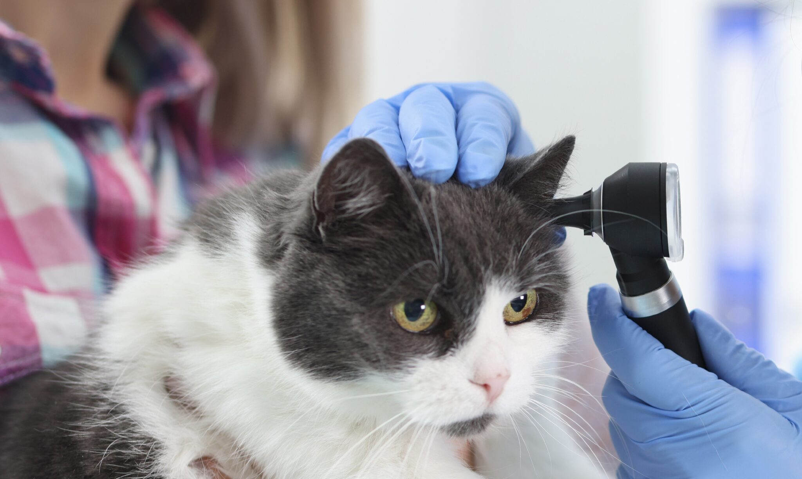

Higiene
Limpieza de oídos: Previniendo la otitis

Los oídos son una de las zonas más sensibles y propensas a infecciones en las mascotas, especialmente en perros de orejas caídas (como Cockers o Beagles) donde la ventilación es escasa. Mantenerlos limpios es la mejor forma de prevenir la dolorosa otitis.
1. ¿Qué es normal y qué no?
Un oído sano debe ser rosado pálido y no tener mal olor. Una pequeña cantidad de cerumen es normal.
Debes alertarte si ves: enrojecimiento, mucha cera marrón oscura o negra, olor rancio o dulce fuerte, o si tu mascota sacude la cabeza y se rasca con insistencia. En estos casos, no limpies; ve al veterinario, ya que podría haber una infección por hongos o bacterias.
2. Cómo limpiar correctamente (Sin hisopos)
Nunca uses hisopos (bastoncillos) de algodón dentro del canal auditivo. Solo empujarás la cera hacia adentro, pudiendo dañar el tímpano.
Lo ideal es usar una gasa envuelta en tu dedo o un limpiador líquido ótico recomendado por tu veterinario. Aplica el líquido, masajea la base de la oreja para que el producto actúe (escucharás un sonido de "chapoteo") y luego deja que tu perro se sacuda. Finalmente, limpia el exceso con la gasa solo en la parte visible.
3. La humedad es el enemigo
Las bacterias y levaduras aman los ambientes húmedos y oscuros. Por eso, es fundamental secar bien los oídos de tu perro después de cada baño o si ha estado nadando. Esta simple acción reduce drásticamente las probabilidades de infección.